项目代号：阿波罗 Apollo
项目目的
基于主流用户玩法，建立良性生态循环的下一代产品基本原型，提升产品在市场的竞争力。 同时建立起女性用户侧与渠道的对接标准（优质女用户K值）。
项目节奏
3个月之内，证明项目的方向是对的，立住阿波罗的左腿；
B面会全力配合A面去做资料的收集，完成A面短期内富媒体内容的构建。
左腿立住以后，整个项目会从商业主导向生态主导转变，B面会全力投入生态的构建，A面将进行分化，有一部分精力将投入同B面一起进行生态完善，逐步将右腿撑住。 只有左右腿完全站住，整个产品形态就能立于不败之地。
A面团队王楠/杨华，商业化嗅觉好，执行能力强。通过和B端的配合立住左腿感觉问题不大；缺点是对整个生态导向能力不足。
B面严欣/远炜，特别是严欣，有产品理想，对产品及生态投入精力大，可能承担起大产品经理，建立起以生态为驱力的产品来。缺点是关于理想主义，方案大而全，投入周期长。
进度
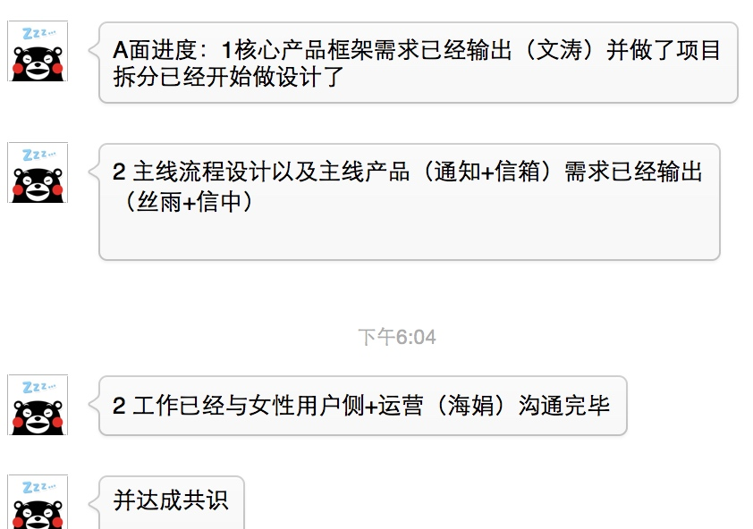
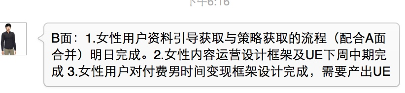
生态结构图
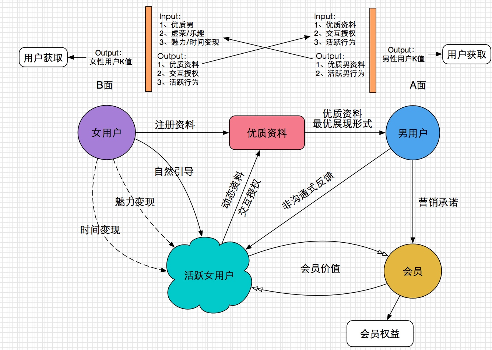
整套大循环的方案有两个重点：
1、 富媒体等主流的无线互联网玩法
2、 单独组织负责女性用户运营，通盘解决富媒体内容提供，营销承诺合规性，会员价值。
女性用户侧以 早起收集优质资料，服务未付费男；同步促进活跃，做会员价值和合规。
这套方案的设计，分为紧急和重要两个层面：
紧急：
即使值做起了以富媒体为基础的资料收集，利用有缘网现有的合规标准，有缘的产品又会成为市面上最先进的产品，往前走1-2年的也是没问题的，但模仿门槛和合规问题没有彻底解决，还会出现目前的危机；
重要：
一旦女性用户活跃建立起来，整个产品将会占领陌生人社交的制高点，市场有多大量咱们就有多大的份额。
需要注意的
1. 服务器
2. 客服，裁图
A面（男用户侧）：
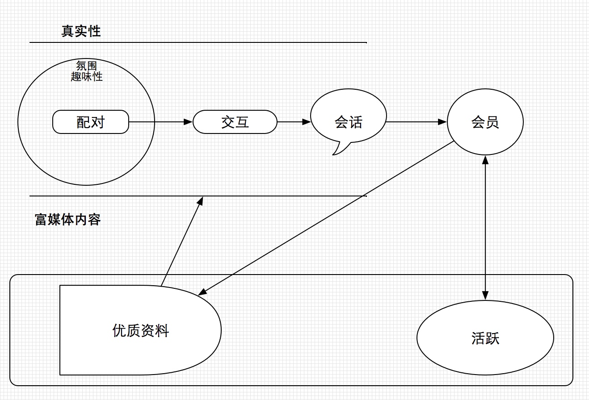
让用户一眼能看懂的逻辑：
配对---会话（互动）
配对---互动----会话
方向：
- 真实性场景
- 以合规为前提，用富媒体内容作为物料的营销刺激
- 会员价值
B面（女用户侧）
女性用户侧是本项目中较重视的环节，有新的组织立足于女用户根本需求进行重新的流程设计和运营，期望建立活跃女用户池子。
做资料&授权 【成功概率大】
- 视频认证 收集视频资料
- 同优质男玩游戏，获取富媒体内容和授权。
做活跃
- 自然引导
- 魅力变现、活动运营、内容运营 【成本平台负担】
- 时间变现 【成本转嫁给男用户】
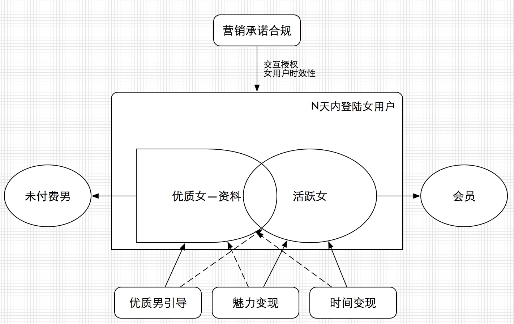
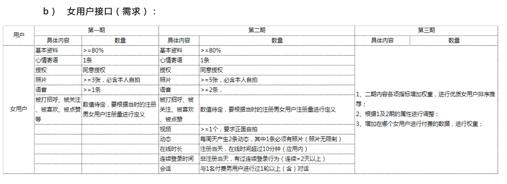
项目控制
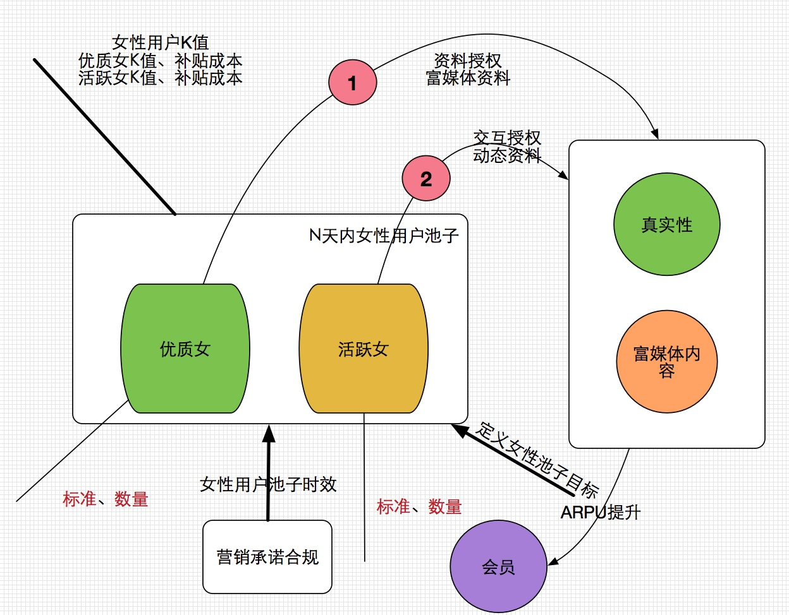
参考数据：
有缘网女性
6.5w 登录 1w 新增注册
微信 微信单独的 1w登录 3k新增
solr 里有女性53万，有头像的42万， 15天登陆过的。
全站数据：
注册：64万（其中女：7万）
登录（不包括注册）：181万（其中女 15万）
会员登录： 30万
整体：
大框架统一思路
短中长 的目标设定
AB面输入输出 接口设计
富媒体资料的接口定义
A面：
富媒体基建打底工作
原型图
B面：
原型图
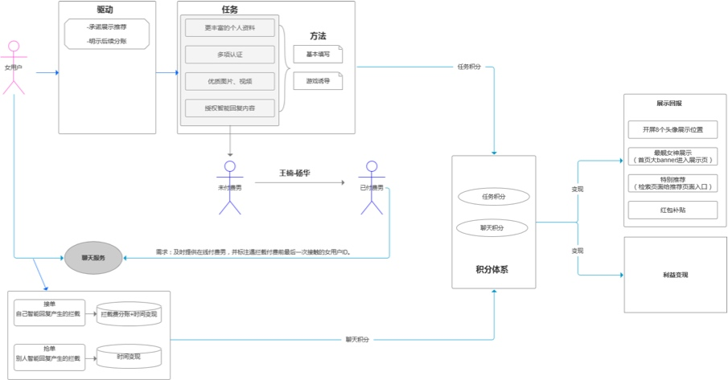
潜在风险点
A测：
动态的方式会不会降低策略强度？
B测：
活跃女性用户盘子目标 和 手段的匹配性
成本是多少？？
组织架构
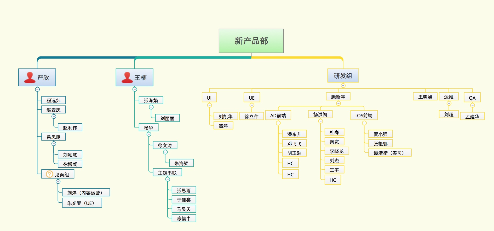
沟通机制
周报、例会、微信群、邮件列表
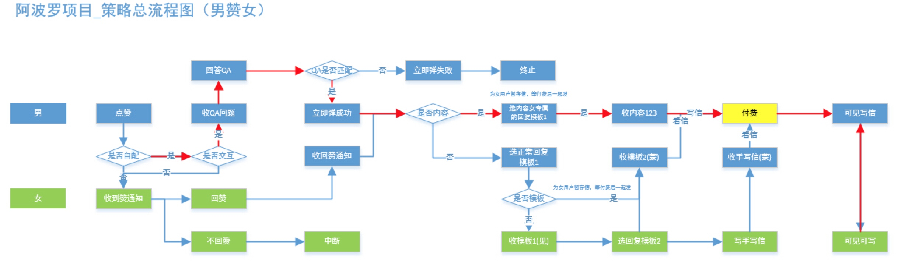
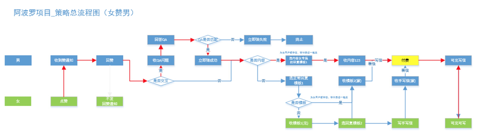